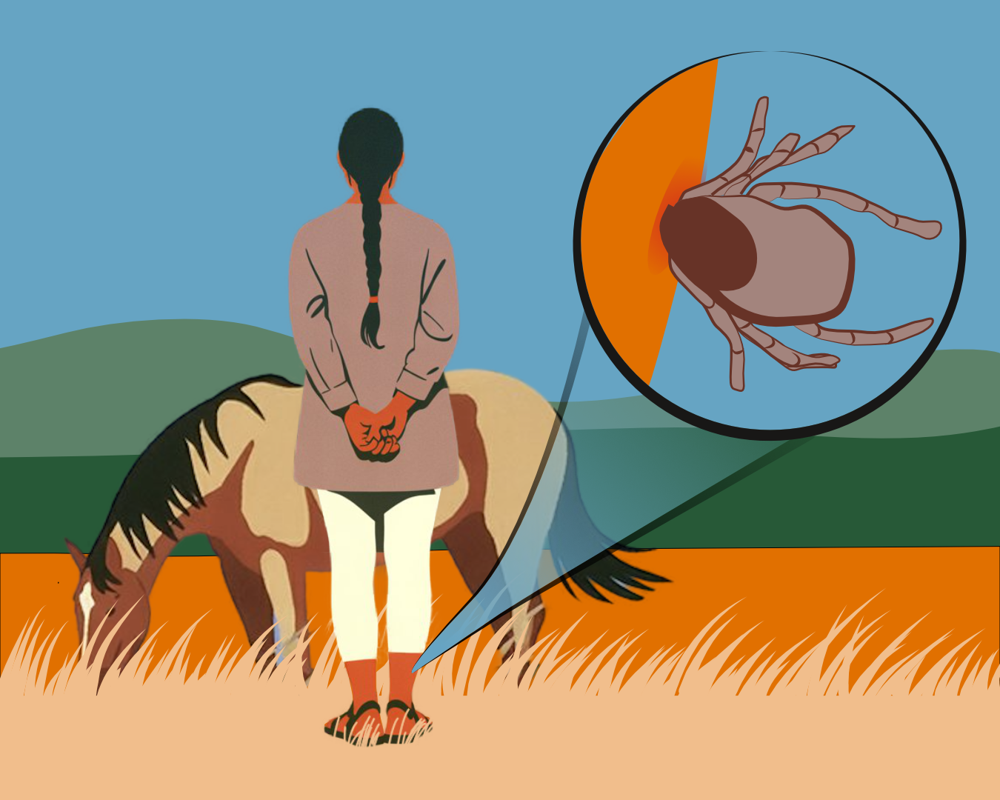
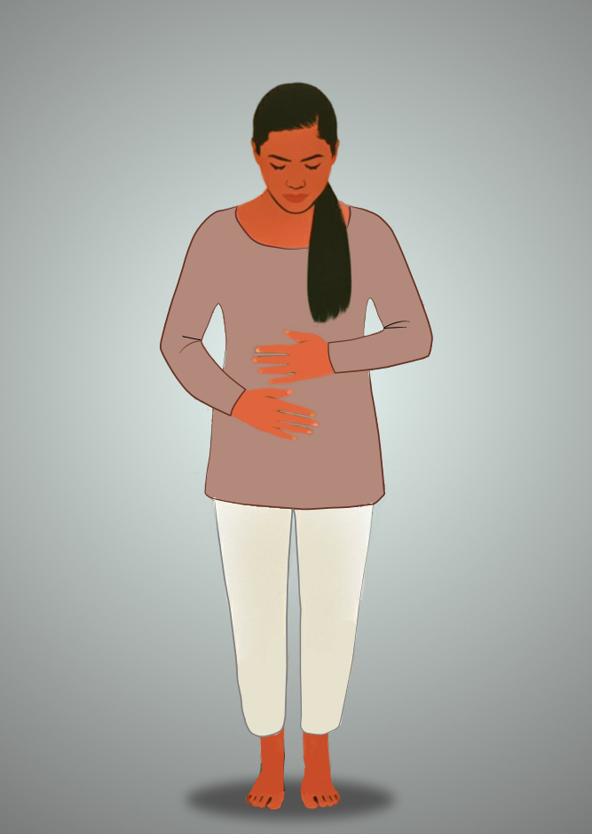
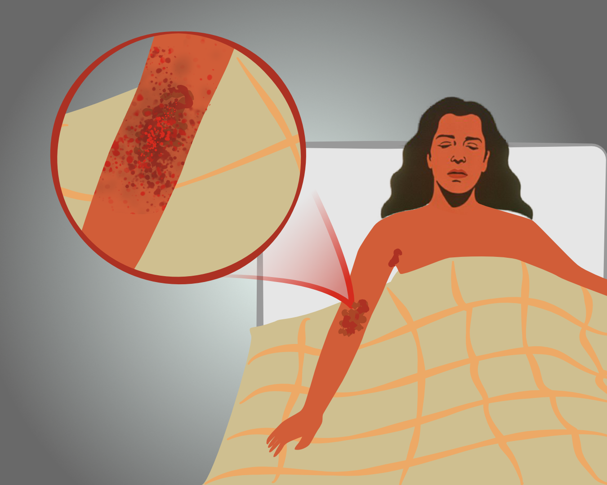
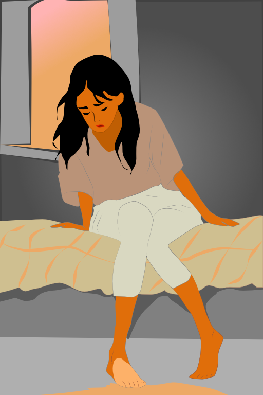

History
Introduction
Crimean-Congo hemorrhagic fever (CCHF) is recognized as the most important tick-borne viral disease affecting humans, with a wide geographic range spanning Africa, Asia, the Middle East, and Eastern Europe. The causative agent, Crimean-Congo hemorrhagic fever virus (CCHFV), belongs to the genus Orthonairovirus (family Nairoviridae). The journey to understanding CCHFV highlights the convergence of discoveries from different continents and areas, illustrating the role of international collaboration in infectious disease research.
The first outbreaks in Crimea
CCHF emerged into the scientific literature in 1944, during World War II, when Soviet military personnel and local agricultural workers in Crimea experienced sudden, severe illness marked by high fever, muscle pain, and widespread bleeding. The mortality rate was alarming, leading to significant concern among public health officials. Dr. Mikhail P. Chumakov spearheaded the investigation, quickly associating the illness with exposure to Hyalomma ticks in the fields. Through inoculation experiments in laboratory animals, the team confirmed a viral cause. The disease was initially termed "Crimean hemorrhagic fever," but the exact identity and classification of the virus remained unclear for decades.
Hyalomma tick. By Tiia Monto - CC BY 4.0 - Wikimedia.org
Recent findings, including protein remnants in archaeological samples from Iron Age Germany, suggest CCHFV might have been present in Europe much earlier than previously appreciated.
Independent discovery in Africa
Decades prior, physicians in what is now the Democratic Republic of Congo reported similar hemorrhagic illnesses, but the pathogen's identity remained undetermined. In 1956, Belgian scientists isolated a virus from a patient presenting hemorrhagic fever in the Congo, naming it "Congo virus." Patients in both regions developed sudden fever, gastrointestinal symptoms, and bleeding, with a consistent link to tick bites, particularly from the Hyalomma genus.
The Congo. ©2025 by Robert ten Hove
Linking the Crimean and Congo Viruses
For several years, the Crimea and Congo viruses were considered separate. Serological investigations in the late 1960s provided the breakthrough: serum from patients in either outbreak neutralized both virus strains, revealing them to be antigenically identical. The new unified name—Crimean-Congo hemorrhagic fever virus (CCHFV)—was now recognized as a single, globally relevant threat.
Vectors and reservoirs identified
Over the following decades, research established a tick-vertebrate-tick transmission cycle, confirming Hyalomma ticks as both vector and reservoir. CCHFV infects a broad spectrum of wild and domestic mammals, which usually remain asymptomatic but sustain viral amplification in nature. This clarified why CCHFV poses such a persistent risk to those with occupational or recreational exposure to ticks or livestock. Examples include soldiers, farmers, shepherds, butchers, and veterinarians.
Expansion of knowledge and early characterization
By the 1970s, CCHF was recognized as a significant emerging public health threat across continents, including Eastern Europe, the Middle East, Africa, and Asia. Advances in serological assays enabled broader surveillance, mapping the virus's spread and guiding preventive measures. Genetic studies classified CCHFV as a bunyavirus with a segmented RNA genome, distinguishing it from other hemorrhagic viruses like Ebola or Lassa.
Today, CCHF is monitored globally, and its presence in new geographical regions, including potential incursions into western Europe, is watched closely as climate change alters tick distribution.
Knowledge Check
Test your understanding of the history and key concepts of Crimean-Congo hemorrhagic fever. Answer all questions and submit to see your score!
Conclusion
The early discovery of Crimean-Congo hemorrhagic fever virus is a fascinating example of parallel investigations converging to reveal the global significance of an emerging pathogen. From the initial outbreak in Crimea during World War II, through the isolation of a similar virus in Africa, to the eventual recognition of their identity, the story of CCHFV is a testament to the importance of international collaboration and vigilance in infectious disease research. Today, CCHF remains a major public health concern, particularly in regions where human-tick contact is common.
Medical content adapted from WHO guidelines (Public Domain)
Scientific data from peer-reviewed research (CC-BY licensed)
Pathology
Introduction
Crimean-Congo Hemorrhagic Fever (CCHF) is endemic in Africa, the Middle East, parts of Europe, and Asia, where sporadic outbreaks are marked by high fatality rates that can approach 40% among hospitalized patients. The virus remains a concern not only due to its potential to cause nosocomial outbreaks but also because of the historical classification as a select (formerly BSL-4) agent, underscoring its notoriety for laboratory and bioterror threat. With advances in biosafety protocols, the terminology of biosafety levels has evolved, but the stringent handling requirements remain unchanged.
Incubation Period and Early Pathogenesis
Upon entering the body, CCHFV targets cells such as endothelial cells lining blood vessels, hepatocytes in the liver, mononuclear phagocytes, and various other parenchymal cells. This extensive cellular tropism is responsible for the virus's rapid dissemination and the involvement of multiple organ systems. After entry to a human, CCHFV targets endothelial cells, hepatocytes, mononuclear phagocytes, and other cell types, leading to widespread dissemination and multi-organ involvement.
The incubation period for CCHF depends on the route of exposure, typically lasting one to three days after a tick bite, with a maximum of nine days. When the exposure is through direct contact with infectious animal or human tissue, the incubation can be a bit longer, up to thirteen days. Initially, the virus replicates locally, before entering the bloodstream resulting in primary viremia. This leads to systemic dissemination to organs such as the liver, spleen, and lymph nodes.
Viral Tropism and Cellular Targets
CCHFV demonstrates broad cellular tropism, infecting cells that are central to both immune response and organ function. Infection of endothelial cells undermines the vascular barrier, increasing permeability and paving the way for hemorrhagic manifestations. Monocytes, macrophages, and dendritic cells, crucial for orchestrating immune defense, become dysfunctional, leading to immune dysregulation. Hepatic infection results in liver injury, while renal and gastrointestinal tissues may also be affected.
Clinical Stages
CCHF in humans follows a characteristic trajectory, defined by four clinical stages. Use the navigation buttons to explore each phase.
Incubation Phase
- Asymptomatic period following exposure to the virus
- Duration varies but typically lasts 1-3 days after tick bite
- No clinical signs of infection during this phase
- Virus replicates silently in infected cells
Pre-hemorrhagic (Prodromal) Phase
- Abrupt onset of symptoms such as high fever (often above 39°C)
- Severe muscle aches, particularly in the back and legs
- Intense headaches and signs of gastrointestinal disturbance
- Mood changes, irritability, confusion, and sore throat may be present
- Non-specific symptoms often complicate early diagnosis unless recent risky exposure is recognized
Hemorrhagic Phase
- Defined by diffuse bleeding—visible as petechial rash and larger bruises
- Frank bleeding from mucosal surfaces (gums, nose, gastrointestinal tract)
- Blood may be found in vomitus, stool, urine, or from sites of venipuncture
- Disseminated intravascular coagulation (DIC) develops
- Multiorgan dysfunction and shock can rapidly ensue
- Critical phase with high mortality risk
Convalescent Phase
- Recovery phase that begins if the patient survives the hemorrhagic phase
- Can last up to one year or longer
- Marked by prolonged weakness and fatigue
- Hair loss (alopecia) is commonly observed
- Persistent neurological symptoms may occur (memory problems, hearing loss)
- Psychiatric symptoms such as depression or anxiety may persist
Pathophysiological Mechanisms
The virus has the ability to devastate the vascular system. Endothelial cells are directly infected and damaged, breaking down the vascular barrier and causing leakage of fluids and cells into tissues. Simultaneously, a cytokine storm is unleashed overwhelming the immune activation with a massive wave of pro-inflammatory cytokines. This intensifies vascular damage, encourages apoptosis, and activates clotting pathways that get rapidly depleted, manifesting as coagulopathy and widespread hemorrhage.
Animal studies reveal a strong correlation between genetic background, the degree of viral replication, and organ damage in the liver and spleen, highlighting the importance of host genetic factors in determining disease outcome.
Organ-Specific Pathology
The virus affects multiple organs, leading to a range of pathological changes. Use the hotspot image to explore the organ-specific pathology associated with CCHF.
Long-Term Sequelae
For those who recover, convalescence can be lengthy. Survivors may deal with complications like persistent low blood pressure, irregular heart rhythms, nerve inflammation, breathing problems, dryness of the mouth, sensory deficits, hair loss, and varying degrees of memory impairment.
Fatal vs. Non-Fatal Disease
A key determinant of outcome in CCHF is the viral load: fatal cases are typically associated with titers exceeding one billion (109) genome copies per milliliter of plasma, levels that can be over a thousand times higher than in survivors. Laboratory signs up to five days after symptom onset—such as severe thrombocytopenia, extremely elevated liver enzymes, and a marked increase in pro-inflammatory cytokines—strongly predict mortality. Clinical features like vomiting blood, blood in stool, strong drowsiness, and the inability to mount a timely antibody response are also signals of a possible fatal course.
Laboratory Findings
CCHF shares many pathological features with other viral hemorrhagic fevers (VHFs) such as Ebola, Marburg, and Lassa fever. All are characterized by endothelial damage, a dysregulated cytokine and immune response, disruption to the clotting system, and multi-organ injury. The hallmark laboratory finding in CCHF is a profound drop in platelet count (thrombocytopenia), often joined by leukopenia and elevated liver enzymes such as AST and ALT.
Key laboratory abnormalities reflecting pathology include:
- Thrombocytopenia
- Leukopenia → leukocytosis in severe cases
- Elevated liver enzymes (AST, ALT, LDH)
- Elevated creatinine and urea (renal involvement)
- Prolonged PT, aPTT, elevated D-dimer, low fibrinogen (DIC)
- Proteinuria and hematuria
- High viral load in blood and tissues
CCHF RNA can be detected via RT-PCR, and viral loads typically peak during the first week of illness. Serum and whole blood being considered the gold standard. Viral RNA detection is also possible in peripheral samples such as saliva, urine, nasal, conjunctival, rectal, and vaginal swabs, especially in severe cases.
Medical content adapted from WHO guidelines (Public Domain)
Scientific data from peer-reviewed research (CC-BY licensed)
Biology
Virology and Transmission
Crimean-Congo hemorrhagic fever virus (CCHFV) is a master of adaptation. As an enveloped, negative-sense single-stranded RNA virus with three genome segments (S, M, L), it employs a clever strategy: different segments separately code for the nucleoprotein, glycoproteins, and RNA-dependent RNA polymerase, allowing for rapid genetic shifts and survival in diverse environments, such as different hosts. The virus relies on Hyalomma ticks as both vectors and reservoirs. Humans typically become infected via tick bites, through crushing ticks, or contact with blood or tissues from infected animals or people. In healthcare, the threat is heightened by documented nosocomial outbreaks, underscoring CCHFV's capability for person-to-person spread if precautions lapse.
Taxonomy and Classification
The genus to where CCHFV belongs to comprises several species, but CCHFV is the most significant human pathogen. The family Nairoviridae contains viruses primarily transmitted by ticks and is distinct from other bunyaviruses transmitted by mosquitoes or rodents.
Phylogenetic tree showing genetic diversity of CCHFV strains across different geographical regions.
CCHFV is an enveloped negative-sense RNA virus belonging to the Orthonairovirus genus in the Nairoviridae family of the Bunyavirales order. In addition to CCHFV, the Nairoviridae family consists of arthropod-borne viruses such as Nairobi sheep disease virus, Dugbe virus and Hazara virus (HAZV), although these viruses seem to cause little-to-no disease in humans. As in other bunyaviruses, the tri-segmented viral genome is coated with the viral nucleoprotein (NP) and bound by the L protein. The viral proteins are encoded by three genomic segments, and relative to other members of the order that can cause human disease, CCHFV has a more complex genomic organization. On entry, these proteins produce positive-sense viral RNA using the genomic negative-sense viral RNA as a template to initiate viral protein production and replication. The viral glycoproteins Gn and Gc are found on the virion surface and are responsible for receptor binding and viral entry.
Order: Bunyavirales/Elliovirales
Family: Nairoviridae
Genus: Orthonairovirus
Species: Orthonairovirus haemorrhagiae (Crimean-Congo Hemorrhagic Fever Virus)
Virion Structure and Morphology
CCHFV virions are spherical to pleomorphic, enveloped particles with a diameter of 80–120 nm. The viral envelope is derived from the host cell membrane and is studded with two types of glycoprotein spikes: Gn and Gc.
Schematic view of CCHF virus particle.
CCHFV particles are generally spherical (80–120 nm in diameter) with a flexible envelope derived from the host cell. Embedded in this envelope are two types of spiky glycoproteins (Gn and Gc), which give the virus both its ability to latch onto new cells and to dodge immune defenses. The interior contains the tripartite genome as ribonucleoprotein complexes, expertly packaged for rapid replication.
Genome Organization
The CCHFV genome is neatly divided into three segments, each segment with a specific job.
Schematic view of CCHF virus genome.
Small (S) Segment: Encodes the nucleoprotein (N).
Medium (M) Segment: Encodes the glycoprotein precursor (GPC), which is processed into Gn, Gc, and several nonstructural proteins.
Large (L) Segment: Encodes the RNA-dependent RNA polymerase (L protein).
| Segment | Size (kb) | Key Protein(s) | Role |
|---|---|---|---|
| S | ~1.7 | Nucleoprotein (N) | RNA encapsidation, replication |
| M | ~5.4 | Glycoproteins (Gn, Gc) | Host entry, immune evasion |
| L | ~12.1 | Polymerase (L) | RNA synthesis |
Each segment is flanked by conserved noncoding regions, crucial for replication and genome packing.
Replication Cycle
CCHFV replicates entirely within the cytoplasm, following a rapid and efficient cycle:
- Entry: Gn and Gc glycoproteins lock onto receptors on host cells, then the virus enters via clathrin-mediated endocytosis.
- Fusion & Release: Acidic conditions in the cell trigger Gc-glycoproteins, merging viral and endosomal membranes and releasing viral complexes into the cytoplasm.
- Transcription/Translation: The L polymerase "steals" caps from host mRNA (cap-snatching) for viral mRNA synthesis; proteins are made on host ribosomes.
- Genome Replication: Complementary full-length RNA is created to serve as templates for more genomic RNA.
- Assembly and Release: Viral proteins and genomes are assembled at the Golgi or plasma membrane; new virus particles exit the cell by budding, armed for further infection.
Genetic Diversity and Evolution
CCHFV stands out as one of the most variable tick-borne viruses—strains can differ by up to 20% in their genetic code. This diversity results from:
- The virus's segmented genome, promoting exchanges and rearrangements during co-infection by different strains within a host.
- A naturally high mutation rate due to lack of proofreading during replication.
- The evolution in a wide geographic range with circulation in many tick and animal hosts.
Phylogenetic studies show major lineages in Africa, Asia, Eastern Europe, and the Middle East. This diversity of the virus contributes to the emergence of novel strains with unpredictable virulence and epidemiology.
Ecology, Hosts, and Transmission Dynamics
Tick Vectors
Hyalomma ticks are both the long-term home and the main vector for CCHFV. They can carry the virus throughout their multi-stage life cycle—larva, nymph, adult—and even transmit it to their offspring. Once infected, ticks remain carriers for life and transmit the virus to animals and sometimes humans.
Vertebrate Hosts
A wide array of animals—cattle, sheep, goats, camels, horses, hares, hedgehogs, rodents—can host CCHFV. Most animals show no symptoms but get short-lived viremia, providing a bridge for ticks to pick up and spread the virus. Some ground-feeding birds may carry infected ticks but generally do not get sick.
Human Infection
Humans are accidental hosts, typically becoming infected by:
- Tick bites, the primary pathway.
- Contact with blood/tissues. Farmers, veterinarians, and abattoir workers are at heightened risk when handling livestock, particularly during slaughter or birthing, as the virus can spread through small cuts or abrasions.
- Nosocomial (hospital-acquired) or household transmission, via blood or body fluids.
- Laboratory exposure. Rare, but laboratory workers can become infected while handling patient samples or cultures if strict biosafety practices are not observed.
Humans, however, generally do not develop high enough viremia to infect new ticks, so human-to-tick transmission is usually insignificant in the spread of the virus.
📚 Laboratory-Acquired Infections: Historical Cases
Throughout history, laboratory workers have been at risk of CCHFV infection. Here are some documented cases:
- Soviet Union (1944–1950s): The earliest recognized CCHF cases in Crimea included laboratory and medical personnel infected while handling patient samples or working with the virus (Chumakov, 1965).
- South Africa (1969): A laboratory worker developed CCHF following a needlestick injury while handling infectious material (Gear et al., 1975).
- Bulgaria (1974): A laboratory technician became infected while processing blood from a CCHF patient, likely due to inadequate personal protective equipment (PPE) and handling errors (Kovács et al., 1980).
- Pakistan (1976): A fatal LAI occurred after a laboratory accident involving a broken ampoule containing CCHFV (Burney et al., 1980).
- Iran (2000s): Multiple laboratory-acquired infections have been reported in recent decades, often linked to improper handling of blood or tissues or accidental exposure during diagnostic procedures (Mardani & Keshtkar-Jahromi, 2007).
These incidents underscore the critical importance of strict biosafety protocols when working with CCHFV.
Geographic Distribution
The virus is endemic in over 30 countries spanning Africa, the Middle East, Eastern Europe, and Asia. Its geographic footprint closely shadows the range of its preferred tick hosts, particularly Hyalomma ticks. This distribution is not random; instead, it is shaped by environmental and human-made factors:
- Ecological factors: Regions with climates that favor dense vegetation and sustain livestock provide ideal habitats for ticks, increasing the risk of CCHFV transmission.
- Animal trade and migration: The movement of animals across borders, whether for trade or seasonal migration, can carry infected ticks into new regions.
- Human activities: Agricultural practices, animal husbandry, and even simple travel to endemic areas enhance opportunities for people and animals to encounter infected ticks.
Countries such as Turkey, Iran, Russia, Pakistan, Afghanistan, South Africa, and those in the Balkans have reported important outbreaks. These occurrences tend to spike seasonally, usually during periods when tick activity reaches its peak, often coinciding with warmer weather or heightened agricultural activity.
Geographic distribution of Crimean-Congo Haemorrhagic Fever (2022)
Data Source: WHO - Viral Haemorrhagic Fevers (VHF) Map Production: J. Bader, EYE Secretariat on 01-09-2022. https://www.who.int/multi-media/details/geographic-distribution-of-crimean-congo-haemorrhagic-fever
Medical content adapted from WHO guidelines (Public Domain)
Scientific data from peer-reviewed research (CC-BY licensed)
Prevention & Control
Protecting against Crimean-Congo hemorrhagic fever (CCHF) calls for a multi-sector, collaborative defense, including farms, clinics, households, and public health systems. Although no licensed vaccine is currently available for humans and animals, a variety of proactive strategies can sharply reduce the risk of infection and control the spread of the virus.
Personal Protective Measures
Tick bite prevention
On the front lines, farm workers and rural residents should wear long sleeves, pants, and closed footwear when working in tick-infested fields or with livestock. Simple clothing choices serve as the first line of defense against tick bites.
Workplace safety
In healthcare and slaughterhouse settings, personal protective equipment (PPE) are barriers that limit exposure to infected blood or body fluids and reduce the chances of accidental transmission. Examples of PPE include laboratory gowns, gloves, face shields, and masks.
Training and protocols
Abattoir and healthcare staff should be trained in proper animal handling, safe butchering techniques, and infection prevention protocols to reinforce PPE effectiveness.
Controlling Ticks and Livestock
Vector control
Managing the tick population is critical. This may involve applying acaricides to livestock and in pastures, regular tick checks, and keeping farm animals treated and monitored for infestations.
Quarantine and inspection
Animals moving from endemic areas should undergo careful inspection and, if necessary, quarantine.
Animal vaccination development
Despite the promising vaccine trials, there are currently no licensed CCHFV vaccines for widespread use in animals. Efforts to vaccinate livestock against CCHFV face a significant challenge: since infected animals rarely show obvious signs of illness, farmers and agricultural businesses often lack an economic reason to invest in vaccination solely to protect human health.
Education and Community Awareness
Informing at-risk groups
At-risk communities can be taught to avoid risky exposures, recognize symptoms early, and take precautions when working with animals or spending time outdoors. The more people know about tick risks and the importance of early detection, the better they can protect themselves and limit the virus's spread.
Medical content adapted from WHO guidelines (Public Domain)
Scientific data from peer-reviewed research (CC-BY licensed)
Laboratory Diagnosis
Since initial symptoms—fever, headache, and general malaise—often mimic other diseases like malaria or leptospirosis, laboratory testing is required to distinguish CCHF from other illnesses. This process relies on the coordinated use of both molecular and serological techniques, each selected based on the stage of disease presentation.
Diagnostic Methods: Molecular vs. Serological
Early Phase (Days 1–7): Detecting the Virus
Reverse Transcriptase-Polymerase Chain Reaction (RT-PCR) is the frontline tool, providing rapid, sensitive, and specific detection of viral RNA in blood, plasma, serum, urine, or tissue. RT-PCR is most effective in the first five days, before the patient's immune system responds with antibodies.
Prognostic insights can be provided with Quantitative RT-PCR. This allows measurement of viral load, which is closely linked to patient outcome. Higher viral loads (lower Ct values) indicate greater severity and a poorer prognosis.
Due to the virus's wide genetic variability, protocols must be validated to detect all known lineages for reliable results.
Later Phase (After Day 5–7): Detecting the Immune Response
Serological Tests (ELISA, IFA) identify specific IgM and IgG antibodies against the CCHFV. IgM emerges 5–7 days after infection, peaking at 2–3 weeks and fading by month four. IgG appears slightly later and can persist for several years, indicating past exposure. Acute infection is confirmed by IgM detection or a four-fold rise in IgG titers between paired samples. However, in severe or fatal cases, antibody responses may be absent or delayed; molecular tests remain essential for confirmation.
Supplementing biomarkers of CCHFV infection are low platelets, white cell counts, elevated liver enzymes, and increased inflammatory cytokines such as IL-6 and TNF-α point to severe disease.
For post-mortem studies, Immunohistochemistry can be applied on tissue samples to locate viral antigens in cells. Next-Generation Sequencing enables the identification and evolution tracking of CCHFV strains for surveillance of the disease.
Summary Table: Quick Reference for CCHF Laboratory Diagnosis
| Phase | Preferred Method | Main Specimens | Biosafety Need | Notes |
|---|---|---|---|---|
| Acute (1–5 days) | RT-PCR, Antigen Detection | Blood, plasma, urine | BSL-2 to BSL-4 | Detects viral RNA, early antigens |
| Convalescent (>5 days) | Serology (ELISA, IFA) | Serum, plasma | BSL-2 | Detects IgM, IgG antibodies |
| Fatal/Pathology cases | IHC, NGS | Biopsies, tissues | BSL-2/BSL-4 | For confirmation/study |
Medical content adapted from WHO guidelines (Public Domain)
Scientific data from peer-reviewed research (CC-BY licensed)